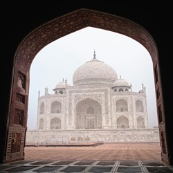

Taj Mahal
The Taj Mahal is an ivory-white marble mausoleum on the right bank of the river Yamuna in Agra, Uttar Pradesh, India. It was commissioned in 1631 by the fifth Mughal emperor, Shah Jahan (r. 1628–1658) to house the tomb of his beloved wife, Mumtaz Mahal; it also houses the tomb of.... Read more
Red Fort
The Red Fort or Lal Qila is a historic fort in the Old Delhi neighbourhood of Delhi, India, that historically served as the main residence of the Mughal emperors. Emperor Shah Jahan commissioned construction of the Red Fort on 12 May 1639, when he decided to shift his capital from Agra to Delhi.... Read more
Ajanta Caves
The Ajanta Caves are 29 rock-cut Buddhist cave monuments dating from the second century BCE to about 480 CE in the Aurangabad district of Maharashtra state in India. Ajanta Caves are a UNESCO World Heritage Site. Universally regarded as masterpieces of Buddhist religious art,.... Read more
Gateway of India
The Gateway of India is an arch-monument completed in 1924 on the waterfront of Mumbai (Bombay), India. It was erected to commemorate the landing of George V for his coronation as the Emperor of India in December 1911 at Strand Road near Wellington Fountain. He was the first British monarch .... Read more